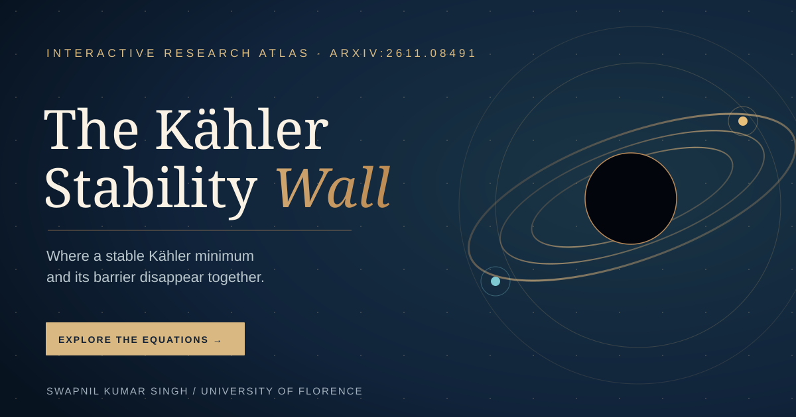

SWAPNIL KUMAR SINGH / PHYSICIST & ENGINEER
I work where physics becomes computation.
I explore cosmology, gravitation and physical systems through analytical models and numerical experiments. The interesting part is making the mathematics testable.
Work worth looking into.

Open the interactive model ↗The Kähler Stability Wall in Perturbative Brane–Antibrane Inflation
An analytic boundary where a metastable Kähler minimum meets its barrier. Explore the loss of stability through the paper’s potential, scaling laws and flux-consistency tests.
Change one parameter. Watch the structure change.
The plot is calculated from the reduced potential in the Kähler Stability Wall paper. Move the uplift ratio to see a minimum and barrier approach the critical fold.
Full research laboratoryA broad field.
A common method.
Research directions are grouped here to make the full archive easier to explore.
On the record.
Have a difficult problem?
I'm interested in computational research, scientific modelling and engineering problems where a clear model can make a practical difference.
Start a conversation